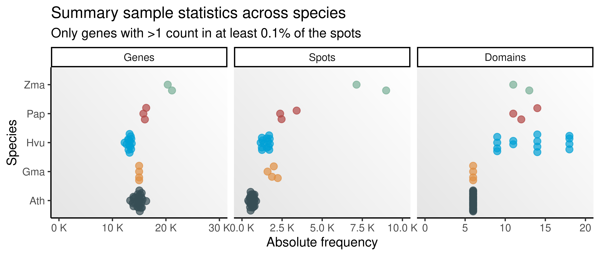
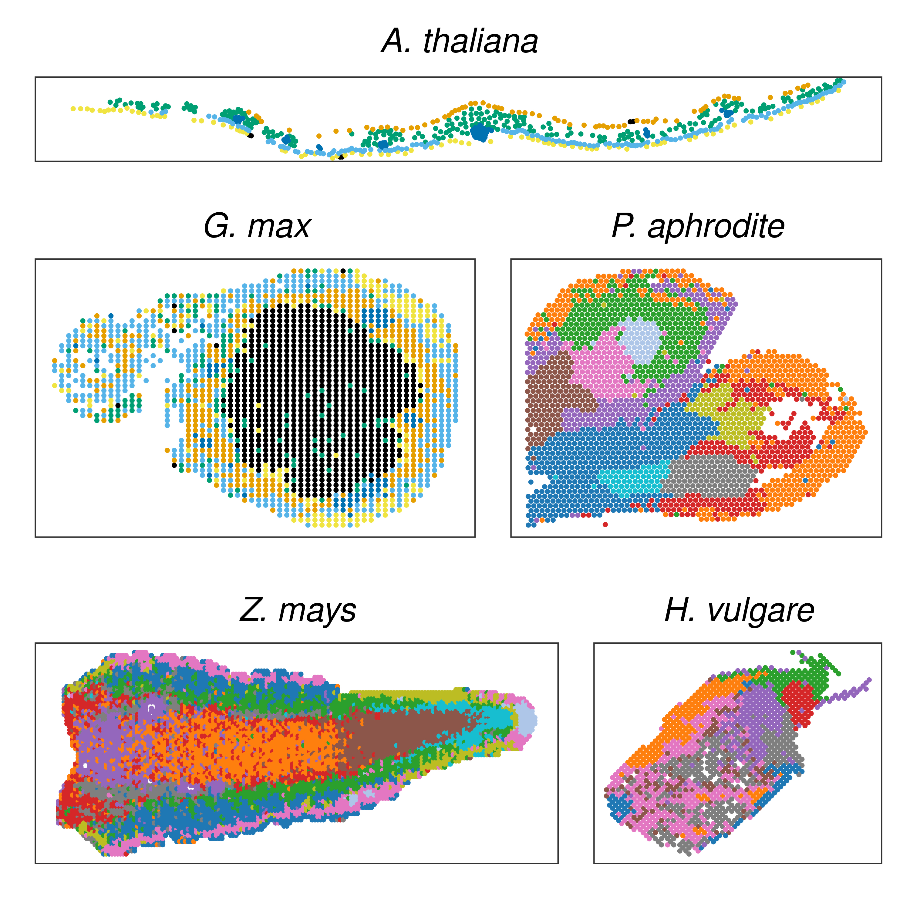

library(here)
library(SpatialExperiment)
library(SummarizedExperiment)
library(DropletUtils)
library(tidyverse)
library(patchwork)
set.seed(123) # for reproducibility
options(timeout = 1e10) # to download large data files
# Load helper functions
source(here("code", "utils.R"))
bg <- grid::linearGradient(colorRampPalette(c("gray90", "white"))(100))1 Spatial transcriptomic data acquisition
In this chapter, we will describe the code used to obtain the data sets used in this project. The data sets are:
Arabidopsis leaves (Xia et al. 2022). In this study, authors obtained 26 samples of cauline leaves from Arabidopsis thaliana.
Orchid flowers (C. Liu et al. 2022). In this study, authors obtained three samples from different sections of developing flowers from Phalaenopsis aphrodite.
Maize ear primordia (STOmics DB, STDS0000236). In this study, authors obtained four samples from developing maize ear primordia.
Soybean nodules (Z. Liu et al. 2023). In this study, authors obtained a sample from soybean nodules
Germinating barley seeds (Peirats-Llobet et al. 2023). In this study, authors obtained 20 samples from barley seeds at different stages of germination.
To start, let’s load required packages.
1.1 Data acquisition
Now, we will download data as H5AD files and store them in a local directory. Each data set will be stored in a separate subdirectory. Then, we will create .rds files for each data set containing lists of SpatialExperiment objects.
1.1.1 Arabidopsis leaves (Xia et al. 2022. Developmental Cell)
Data will be obtained from the ftp repository of STOmics DB.
# Create a vector with file names
base_url <- "https://ftp.cngb.org/pub/SciRAID/stomics/STDS0000104/stomics"
samples <- c(
"S1-1_stereoseq.h5ad", "S1-2_stereoseq.h5ad", "S1-3_stereoseq.h5ad",
"S1-4_stereoseq.h5ad", "S1-5_stereoseq.h5ad", "S1-6_stereoseq.h5ad",
"S1-7_stereoseq.h5ad", "S2-1_stereoseq.h5ad", "S2-3_stereoseq.h5ad",
"S2-4_stereoseq.h5ad", "S2-5_stereoseq.h5ad", "S2-6_stereoseq.h5ad",
"S2-7_stereoseq.h5ad", "S3-1_stereoseq.h5ad", "S3-2_stereoseq.h5ad",
"S3-3_stereoseq.h5ad", "S3-5_stereoseq.h5ad", "S3-6_stereoseq.h5ad",
"S3-7_stereoseq.h5ad", "S4-1_stereoseq.h5ad", "S4-2_stereoseq.h5ad",
"S4-3_stereoseq.h5ad", "S4-4_stereoseq.h5ad", "S4-5_stereoseq.h5ad",
"S4-6_stereoseq.h5ad", "S4-7_stereoseq.h5ad"
)
names(samples) <- gsub("\\.h5ad", "", basename(samples))
# Download files
outdir <- "~/Documents/PlantSpatialDiv_data/arabidopsis"
downloads <- unlist(lapply(samples, function(x) {
fpath <- file.path(base_url, x)
d <- tryCatch(
download.file(url = fpath, destfile = file.path(outdir, x)),
error = function(e) NA
)
return(d)
}))Now, creating SpatialExperiment objects.
# List files
files <- list.files(outdir, full.names = TRUE)
names(files) <- gsub("\\.h5ad", "", basename(files))
# Create and preprocess `SpatialExperiment` objects
ath_spe <- lapply(files, stomics2spe)
ath_spe <- lapply(ath_spe, process_spe, min_exp = c(1, 0.1))
# Save object to RDS file
saveRDS(
ath_spe, compress = "xz",
file = here("products", "result_files", "spe", "spe_ath.rds")
)1.1.2 Orchid flowers (Liu et al. 2022. Nucleic Acids Research)
We will download data from STOmics DB.
# Create a vector with file URLs
base_url <- "https://ftp.cngb.org/pub/SciRAID/stomics/STDS0000149/stomics"
samples <- c(
"STSP0000011/GSM5939574.h5ad",
"STSP0000012/GSM5939575.h5ad",
"STSP0000013/GSM5939576.h5ad",
"STSP0000011/GSM5939574_processed.h5ad",
"STSP0000012/GSM5939575_processed.h5ad",
"STSP0000013/GSM5939576_processed.h5ad"
)
names(samples) <- gsub("\\.h5ad", "", basename(samples))
# Download files
outdir <- "~/Documents/PlantSpatialDiv_data/orchid"
downloads <- unlist(lapply(samples, function(x) {
fpath <- file.path(base_url, x)
d <- tryCatch(
download.file(url = fpath, destfile = file.path(outdir, x)),
error = function(e) NA
)
return(d)
}))Now, creating SpatialExperiment objects.
# List files
files <- list.files(outdir, full.names = TRUE)
names(files) <- gsub("\\.h5ad", "", basename(files))
# Create and preprocess `SpatialExperiment` objects
processed <- files[grepl("processed", files)]
unprocessed <- files[!grepl("processed", files)]
pap_spe <- lapply(seq_along(processed), function(x) {
un <- stomics2spe(unprocessed[x], remote = FALSE)
proc <- stomics2spe(processed[x], remote = FALSE)
# Add column `clusters` to unprocessed data
un$clusters <- proc$clusters
return(un)
})
names(pap_spe) <- gsub("\\.h5ad", "", basename(unprocessed))
pap_spe <- lapply(
pap_spe, process_spe,
min_exp = c(1, 0.1), domain_col = "clusters"
)
# Save object to RDS file
saveRDS(
pap_spe, compress = "xz",
file = here("products", "result_files", "spe", "spe_pap.rds")
)1.1.3 Maize ear primordia (Wang et al. 2024. Nature Plants)
First, we will download H5AD files from STOmics DB.
# Create a vector with file URLs
burl <- "https://ftp.cngb.org/pub/SciRAID/stomics/STDS0000236/stomics"
samples <- c(
"STSP0007368/MaizeEar_rep3_Impute.h5ad",
"STSP0007369/MaizeEar_rep4_Impute.h5ad"
)
names(samples) <- gsub("\\.h5ad", "", basename(samples))
# Download files
outdir <- "~/Documents/PlantSpatialDiv_data/maize_ear"
downloads <- unlist(lapply(samples, function(x) {
fpath <- file.path(burl, x)
d <- tryCatch(
download.file(url = fpath, destfile = file.path(outdir, x)),
error = function(e) NA
)
return(d)
}))Now, downloading raw .gem files from STOmicsDB to obtain raw (i.e., non-normalized) counts.
# Create a vector with file URLs
samples <- c(
"STSP0007368/MaizeEar_rep3_Raw_bin50.gem",
"STSP0007369/MaizeEar_rep4_Raw_bin50.gem"
)
names(samples) <- gsub("\\.gem", "", basename(samples))
downloads <- unlist(lapply(samples, function(x) {
fpath <- file.path(burl, x)
d <- tryCatch(
download.file(url = fpath, destfile = file.path(outdir, basename(x))),
error = function(e) NA
)
return(d)
}))Next, creating SpatialExperiment objects.
# Create a data frame with paths to H5AD and .gem files
f <- list.files("~/Documents/PlantSpatialDiv_data/maize_ear", full.names = TRUE)
maize_paths <- data.frame(
Sample = c("MaizeEar_rep3", "MaizeEar_rep4"),
H5AD = f[endsWith(f, "h5ad")],
gem = f[endsWith(f, "gem")]
)
### For each sample, read processed and unprocessed data, and combine them
zma_spe <- lapply(seq_len(nrow(maize_paths)), function(x) {
# Read H5AD file as `SpatialExperiment`
spe <- stomics2spe(maize_paths$H5AD[x], remote = FALSE)
assay(spe, "logcounts") <- NULL
# Read .gem file with raw counts and match spots to cols of `un`
coords <- spatialCoords(spe) |>
as.data.frame() |>
tibble::rownames_to_column("spot_id")
gem <- readr::read_tsv(
maize_paths$gem[x],
show_col_types = FALSE
) |>
dplyr::right_join(coords, by = c("x" = "x_coord", "y" = "y_coord")) |>
dplyr::arrange(spot_id) |>
dplyr::select(geneID, spot_id, MIDCount) |>
tidyr::pivot_wider(
names_from = spot_id, values_from = MIDCount, values_fill = 0
) |>
tibble::column_to_rownames("geneID") |>
as.matrix()
gem <- as(gem, "dgCMatrix")
gem <- gem[, colnames(spe)]
gem <- gem[rownames(spe), ]
# Replace the 'counts' assay of `spe` with new matrix
assay(spe, "counts") <- gem
# Add 'logcounts' assay
spe <- scater::computeLibraryFactors(spe)
spe <- scater::logNormCounts(spe)
return(spe)
})
names(zma_spe) <- maize_paths$Sample
zma_spe <- lapply(
zma_spe, process_spe,
min_exp = c(1, 0.1), domain_col = "cell_type"
)
# Save object to RDS file
saveRDS(
zma_spe, compress = "xz",
file = here("products", "result_files", "spe", "spe_zma.rds")
)1.1.4 Soybean nodules (Liu et al. 2023. Nature Plants)
First, we will download H5AD files from OMIX.
# Download H5AD files
sample_urls <- c(
"https://download.cncb.ac.cn/OMIX/OMIX002290/OMIX002290-01.h5ad"
)
names(sample_urls) <- gsub("\\.h5ad", "", basename(sample_urls))
lapply(seq_along(sample_urls), function(x) {
url <- sample_urls[x]
outfile <- file.path(
"~/Documents/PlantSpatialDiv_data/soybean", basename(url)
)
d <- tryCatch(
download.file(url = url, destfile = outfile),
error = function(e) NA
)
return(d)
})Now, creating SpatialExperiment objects.
# List files
files <- list.files("~/Documents/PlantSpatialDiv_data/soybean", full.names = TRUE)
names(files) <- gsub("\\.h5ad", "", basename(files))
# Create and preprocess `SpatialExperiment` objects
gma_spe <- lapply(files, function(x) {
### Read H5AD file as a SingleCellExperiment object
sce <- zellkonverter::readH5AD(x)
### Convert SingleCellExperiment to SpatialExperiment
coords <- as.matrix(SingleCellExperiment::reducedDim(sce, "spatial"))
colnames(coords) <- c("x_coord", "y_coord")
spe <- SpatialExperiment::SpatialExperiment(
assays = list(counts = assay(sce, "raw")),
colData = SummarizedExperiment::colData(sce),
rowData = SummarizedExperiment::rowData(sce),
spatialCoords = coords
)
### Add 'logcounts' assay
spe <- scater::computeLibraryFactors(spe)
spe <- scater::logNormCounts(spe)
### Process the `SpatialExperiment` object
spe <- process_spe(spe, min_exp = c(1, 0.1), domain_col = "Tissue")
return(spe)
})The original H5AD file contains 4 different slides combined into a single file. Hence, the SpatialExperiment object we created contains 4 sections that must be split into separate objects. Information on slides are available as suffixes in spot IDs as <spot>-<slide>.
# Splitting slides into separate `SpatialExperiment` objects
slide_ids <- unique(gsub(".*-", "", colnames(gma_spe$`OMIX002290-01`)))
gma_spe_final <- lapply(slide_ids, function(x) {
spe <- gma_spe[[1]]
spe <- spe[, grepl(x, colnames(spe))]
return(spe)
})
names(gma_spe_final) <- slide_ids
# Saving objects to RDS files
saveRDS(
gma_spe_final, compress = "xz",
file = here("products", "result_files", "spe", "spe_gma.rds")
)1.1.5 Germinating barley seeds (Peirats-Llobet et al. 2023. NAR)
First, let’s obtain data from GEO (accession GSE218970).
# Download .tar file from GEO
wget https://www.ncbi.nlm.nih.gov/geo/download/?acc=GSE218970&format=file
tar -zxvf GSE218970_RAW.tar
# Extract all files in subdirectory
cd GSE218970_RAW
for file in *.tar.gz; do
mkdir -p "${file%.tar.gz}/outs" &&
tar -xzf "$file" -C "${file%.tar.gz}/outs" --strip-components=1;
doneNow, let’s read all files as SpatialExperiment objects.
# List directories with `spatial/` subdir (some don't have it)
dirs <- list.dirs(
path = "~/Downloads/GSE218970_RAW", full.names = TRUE, recursive = FALSE
)
dirs <- dirs[!grepl("test", dirs)]
keep_idx <- which(sapply(dirs, function(x) {
file.exists(file.path(x, "outs/spatial", "tissue_positions_list.csv"))
}) == TRUE)
dirs <- dirs[keep_idx]
# Define function to read SpaceRanger output as a `SpatialExperiment` obj
spaceranger2spe <- function(dir) {
# Create `SpatialExperiment` and add 'spatialCoords' slot
spe <- SpatialExperiment::read10xVisium(
samples = dir,
type = "sparse", data = "filtered",
images = "lowres", load = FALSE
)
coords <- as.matrix(colData(spe)[, c("array_col", "array_row")])
colnames(coords) <- c("x_coord", "y_coord")
spatialCoords(spe) <- coords
# Add per-spot QC metrics
spe <- scuttle::addPerCellQC(spe)
# Prefiltering: remove spots with sum of counts too low (<10)
spe <- spe[, spe$detected >= 10]
# Add logcounts
spe <- scater::computeLibraryFactors(spe)
spe <- scater::logNormCounts(spe)
return(spe)
}
# Create objects
hvu_spe <- lapply(dirs, spaceranger2spe)
names(hvu_spe) <- basename(dirs)
# Process `SpatialExperiment` objects
hvu_spe <- lapply(hvu_spe, process_spe, min_exp = c(1, 0.1), remove_missing = FALSE)Next, we will add spatial domain annotation to spots using data obtained from the authors (sent by email).
hvu_domains <- read.csv(here("data", "hvu_spot_identity.csv"), row.names = 1)
# Add domain annotation to spots
hvu_spe <- lapply(names(hvu_spe), function(x) {
meta <- unlist(strsplit(x, "_"))
sa <- hvu_domains |>
dplyr::filter(
slide_number == meta[2],
time == meta[3],
section == meta[4]
) |>
tibble::remove_rownames() |>
tibble::column_to_rownames("barcode")
# Update `SpatialExperiment` object
new_spe <- hvu_spe[[x]]
colData(new_spe) <- merge(
as.data.frame(colData(new_spe)), sa, by = "row.names", all.x = TRUE
) |>
tibble::column_to_rownames("Row.names") |>
DataFrame()
return(new_spe)
})
names(hvu_spe) <- basename(dirs)
# Remove `ge10` samples - no domain annotation
hvu_spe <- hvu_spe[!grepl("ge10", names(hvu_spe))]Finally, we will replace gene IDs with the most recent assembly available on Ensembl Plants. For that, we will use Ensembl Plants’ ID History Converter.
# Create a file with barley gene IDs and export it
gene_ids <- lapply(hvu_spe, rownames) |> unlist() |> unique()
write_tsv(data.frame(Gene = gene_ids), file = "~/Downloads/hvulgare_ids.tsv")The file hvulgare_ids.tsv was used as input to ID History Converter in Ensembl Plants release 60, and correspondence between IDs were saved to products/tables/hvu_id_correspondence.csv. Let’s read it and use it to convert old IDs to new IDs.
hvu_ids <- read_csv(
here("products", "tables", "hvu_id_correspondence.csv"),
show_col_types = FALSE
) |>
janitor::clean_names() |>
dplyr::filter(release != "Release") |>
mutate(
mapping_score = as.numeric(mapping_score),
old_stable_id = str_replace_all(old_stable_id, "\\.[0-9]$", ""),
new_stable_id = str_replace_all(new_stable_id, "\\.[0-9]$", "")
) |>
arrange(-mapping_score) |>
select(old_stable_id, new_stable_id) |>
distinct(old_stable_id, .keep_all = TRUE) |>
distinct(new_stable_id, .keep_all = TRUE)We will now use this ID correspondence data frame to convert gene IDs in the SpatialExperiment objects.
# Replace old IDs with new ones
hvu_spe_final <- lapply(hvu_spe, function(x) {
y <- x[rownames(x) %in% hvu_ids$old_stable_id, ]
idx <- match(rownames(y), hvu_ids$old_stable_id)
rownames(y) <- hvu_ids$new_stable_id[idx]
return(y)
})
# Saving objects to RDS files
saveRDS(
hvu_spe_final, compress = "xz",
file = here("products", "result_files", "spe", "spe_hvu.rds")
)1.2 Summary statistics
Next, we will explore and visualize summary statistics (number of expressed genes, number of spots, spatial domains, etc) for each SpatialExperiment object.
We will start by loading the SpatialExperiment objects created in the previous section.
# Load `SpatialExperiment` objects
ath_spe <- readRDS(here("products", "result_files", "spe", "spe_ath.rds"))
pap_spe <- readRDS(here("products", "result_files", "spe", "spe_pap.rds"))
zma_spe <- readRDS(here("products", "result_files", "spe", "spe_zma.rds"))
gma_spe <- readRDS(here("products", "result_files", "spe", "spe_gma.rds"))
hvu_spe <- readRDS(here("products", "result_files", "spe", "spe_hvu.rds"))1.2.1 Dimensions and spatial domains
Here, we will explore the dimensions (genes x spots) and number of spatial domains of each object.
# Define helper function to get number of genes, spots, and domains
count_dims <- function(spe, domain = "cell_type") {
df <- data.frame(
Genes = nrow(spe),
Spots = ncol(spe),
Domains = length(unique(spe[[domain]]))
)
return(df)
}
# Get summary stats for each object
spe_stats <- bind_rows(
## Ath
lapply(ath_spe, count_dims, domain = "cell_type") |>
bind_rows(.id = "sample") |>
mutate(species = "Ath"),
## Gma
lapply(gma_spe, count_dims, domain = "annotation") |>
bind_rows(.id = "sample") |>
mutate(species = "Gma"),
## Pap
lapply(pap_spe, count_dims, domain = "clusters") |>
bind_rows(.id = "sample") |>
mutate(species = "Pap"),
## Zma
lapply(zma_spe, count_dims, domain = "cell_type") |>
bind_rows(.id = "sample") |>
mutate(species = "Zma"),
## Hvu
lapply(hvu_spe, count_dims, domain = "tissue") |>
bind_rows(.id = "sample") |>
mutate(species = "Hvu")
)We can visualize such statistics grouped by species.
# Plot number of genes, spots, and domains per species
p_spestats <- spe_stats |>
pivot_longer(cols = c(Genes, Spots, Domains)) |>
mutate(name = factor(name, levels = c("Genes", "Spots", "Domains"))) |>
ggplot(aes(x = value, y = species, color = species)) +
ggbeeswarm::geom_quasirandom(alpha = 0.7, size = 2.5) +
ggsci::scale_color_jama() +
facet_wrap(~name, scales = "free_x") +
theme_classic() +
theme(
legend.position = "none",
panel.grid = element_blank(),
panel.background = element_rect(fill = bg)
) +
ggh4x::facetted_pos_scales(x = list(
scale_x_continuous(
limits = c(0, 3e4),
labels = scales::unit_format(unit = "K", scale = 1e-3)
),
scale_x_continuous(
limits = c(0, 1e4),
labels = scales::unit_format(unit = "K", scale = 1e-3)
),
scale_x_continuous(limits = c(0, 20))
)) +
labs(
title = "Summary sample statistics across species",
subtitle = "Only genes with >1 count in at least 0.1% of the spots",
x = "Absolute frequency",
y = "Species"
)
p_spestats
1.2.2 Spots and domains
Next, we will plot spots colored by spatial for all slides.
# Plot spots colored by domains
p_spots <- list(
Ath = lapply(
ath_spe, ggspavis::plotSpots, in_tissue = NULL,
annotate = "cell_type", pal = "Okabe-Ito"
),
Gma = lapply(
gma_spe, ggspavis::plotSpots, in_tissue = NULL,
annotate = "annotation", pal = "Okabe-Ito"
),
Pap = lapply(
pap_spe, ggspavis::plotSpots, in_tissue = NULL,
annotate = "clusters", pal = ggsci::pal_d3("category20")(20)
),
Zma = lapply(
zma_spe, ggspavis::plotSpots, in_tissue = NULL,
annotate = "cell_type", pal = ggsci::pal_d3("category20")(20)
),
Hvu = lapply(
hvu_spe, ggspavis::plotSpots, in_tissue = NULL,
annotate = "tissue", pal = ggsci::pal_d3("category20")(20)
)
)Now, we will create a plot with one slide for each species to use as a summary of the data sets in this study.
# Plot one slide per species
p_spot_species <- wrap_plots(
p_spots$Ath[[12]] + ggtitle("A. thaliana"),
wrap_plots(
p_spots$Gma[[4]] + ggtitle("G. max"),
p_spots$Pap[[1]] + ggtitle("P. aphrodite"),
ncol = 2
),
wrap_plots(
p_spots$Zma[[1]] + coord_fixed(ratio = 1.1) + ggtitle("Z. mays"),
p_spots$Hvu[[13]] + ggtitle("H. vulgare"),
ncol = 2
),
nrow = 3,
heights = c(0.3, 1, 0.8)
) &
theme(
legend.position = "none",
plot.title = element_text(hjust = 0.5, face = "italic")
)
p_spot_species
1.3 Saving objects
Finally, we will save important objects and plots created in this document for future reuse.
# Objects
saveRDS(
spe_stats, compress = "xz",
file = here("products", "result_files", "spe_summary_stats.rds")
)
# Plots
saveRDS(
p_spestats, compress = "xz",
file = here("products", "plots", "p_spe_summary_stats.rds")
)
saveRDS(
p_spot_species, compress = "xz",
file = here("products", "plots", "p_spots_one_slide_per_species.rds")
)Session info
This document was created under the following conditions:
─ Session info ───────────────────────────────────────────────────────────────
setting value
version R version 4.4.1 (2024-06-14)
os Ubuntu 22.04.4 LTS
system x86_64, linux-gnu
ui X11
language (EN)
collate en_US.UTF-8
ctype en_US.UTF-8
tz Europe/Brussels
date 2025-04-23
pandoc 3.2 @ /usr/lib/rstudio/resources/app/bin/quarto/bin/tools/x86_64/ (via rmarkdown)
─ Packages ───────────────────────────────────────────────────────────────────
package * version date (UTC) lib source
abind 1.4-5 2016-07-21 [1] CRAN (R 4.4.1)
beachmat 2.20.0 2024-04-30 [1] Bioconductor 3.19 (R 4.4.1)
beeswarm 0.4.0 2021-06-01 [1] CRAN (R 4.4.1)
Biobase * 2.64.0 2024-04-30 [1] Bioconductor 3.19 (R 4.4.1)
BiocGenerics * 0.50.0 2024-04-30 [1] Bioconductor 3.19 (R 4.4.1)
BiocParallel 1.38.0 2024-04-30 [1] Bioconductor 3.19 (R 4.4.1)
cli 3.6.3 2024-06-21 [1] CRAN (R 4.4.1)
codetools 0.2-20 2024-03-31 [1] CRAN (R 4.4.1)
colorspace 2.1-0 2023-01-23 [1] CRAN (R 4.4.1)
crayon 1.5.3 2024-06-20 [1] CRAN (R 4.4.1)
DelayedArray 0.30.1 2024-05-07 [1] Bioconductor 3.19 (R 4.4.1)
DelayedMatrixStats 1.26.0 2024-04-30 [1] Bioconductor 3.19 (R 4.4.1)
digest 0.6.36 2024-06-23 [1] CRAN (R 4.4.1)
dplyr * 1.1.4 2023-11-17 [1] CRAN (R 4.4.1)
dqrng 0.4.1 2024-05-28 [1] CRAN (R 4.4.1)
DropletUtils * 1.24.0 2024-04-30 [1] Bioconductor 3.19 (R 4.4.1)
edgeR 4.2.1 2024-07-14 [1] Bioconductor 3.19 (R 4.4.1)
evaluate 0.24.0 2024-06-10 [1] CRAN (R 4.4.1)
fansi 1.0.6 2023-12-08 [1] CRAN (R 4.4.1)
farver 2.1.2 2024-05-13 [1] CRAN (R 4.4.1)
fastmap 1.2.0 2024-05-15 [1] CRAN (R 4.4.1)
forcats * 1.0.0 2023-01-29 [1] CRAN (R 4.4.1)
generics 0.1.3 2022-07-05 [1] CRAN (R 4.4.1)
GenomeInfoDb * 1.40.1 2024-05-24 [1] Bioconductor 3.19 (R 4.4.1)
GenomeInfoDbData 1.2.12 2024-07-24 [1] Bioconductor
GenomicRanges * 1.56.1 2024-06-12 [1] Bioconductor 3.19 (R 4.4.1)
ggbeeswarm 0.7.2 2023-04-29 [1] CRAN (R 4.4.1)
ggh4x 0.2.8 2024-01-23 [1] CRAN (R 4.4.1)
ggplot2 * 3.5.1 2024-04-23 [1] CRAN (R 4.4.1)
ggrepel 0.9.5 2024-01-10 [1] CRAN (R 4.4.1)
ggside 0.3.1 2024-03-01 [1] CRAN (R 4.4.1)
ggspavis 1.10.0 2024-05-16 [1] Bioconductor 3.19 (R 4.4.1)
glue 1.7.0 2024-01-09 [1] CRAN (R 4.4.1)
gtable 0.3.5 2024-04-22 [1] CRAN (R 4.4.1)
HDF5Array 1.32.1 2024-08-11 [1] Bioconductor 3.19 (R 4.4.1)
here * 1.0.1 2020-12-13 [1] CRAN (R 4.4.1)
hms 1.1.3 2023-03-21 [1] CRAN (R 4.4.1)
htmltools 0.5.8.1 2024-04-04 [1] CRAN (R 4.4.1)
htmlwidgets 1.6.4 2023-12-06 [1] CRAN (R 4.4.1)
httr 1.4.7 2023-08-15 [1] CRAN (R 4.4.1)
IRanges * 2.38.1 2024-07-03 [1] Bioconductor 3.19 (R 4.4.1)
jsonlite 1.8.8 2023-12-04 [1] CRAN (R 4.4.1)
knitr 1.48 2024-07-07 [1] CRAN (R 4.4.1)
labeling 0.4.3 2023-08-29 [1] CRAN (R 4.4.1)
lattice 0.22-6 2024-03-20 [1] CRAN (R 4.4.1)
lifecycle 1.0.4 2023-11-07 [1] CRAN (R 4.4.1)
limma 3.60.4 2024-07-17 [1] Bioconductor 3.19 (R 4.4.1)
locfit 1.5-9.10 2024-06-24 [1] CRAN (R 4.4.1)
lubridate * 1.9.3 2023-09-27 [1] CRAN (R 4.4.1)
magick 2.8.4 2024-07-14 [1] CRAN (R 4.4.1)
magrittr 2.0.3 2022-03-30 [1] CRAN (R 4.4.1)
Matrix 1.7-0 2024-04-26 [1] CRAN (R 4.4.1)
MatrixGenerics * 1.16.0 2024-04-30 [1] Bioconductor 3.19 (R 4.4.1)
matrixStats * 1.3.0 2024-04-11 [1] CRAN (R 4.4.1)
munsell 0.5.1 2024-04-01 [1] CRAN (R 4.4.1)
patchwork * 1.2.0 2024-01-08 [1] CRAN (R 4.4.1)
pillar 1.9.0 2023-03-22 [1] CRAN (R 4.4.1)
pkgconfig 2.0.3 2019-09-22 [1] CRAN (R 4.4.1)
purrr * 1.0.2 2023-08-10 [1] CRAN (R 4.4.1)
R.methodsS3 1.8.2 2022-06-13 [1] CRAN (R 4.4.1)
R.oo 1.26.0 2024-01-24 [1] CRAN (R 4.4.1)
R.utils 2.12.3 2023-11-18 [1] CRAN (R 4.4.1)
R6 2.5.1 2021-08-19 [1] CRAN (R 4.4.1)
RColorBrewer 1.1-3 2022-04-03 [1] CRAN (R 4.4.1)
Rcpp 1.0.13 2024-07-17 [1] CRAN (R 4.4.1)
readr * 2.1.5 2024-01-10 [1] CRAN (R 4.4.1)
rhdf5 2.48.0 2024-04-30 [1] Bioconductor 3.19 (R 4.4.1)
rhdf5filters 1.16.0 2024-04-30 [1] Bioconductor 3.19 (R 4.4.1)
Rhdf5lib 1.26.0 2024-04-30 [1] Bioconductor 3.19 (R 4.4.1)
rjson 0.2.21 2022-01-09 [1] CRAN (R 4.4.1)
rlang 1.1.4 2024-06-04 [1] CRAN (R 4.4.1)
rmarkdown 2.27 2024-05-17 [1] CRAN (R 4.4.1)
rprojroot 2.0.4 2023-11-05 [1] CRAN (R 4.4.1)
rstudioapi 0.16.0 2024-03-24 [1] CRAN (R 4.4.1)
S4Arrays 1.4.1 2024-05-20 [1] Bioconductor 3.19 (R 4.4.1)
S4Vectors * 0.42.1 2024-07-03 [1] Bioconductor 3.19 (R 4.4.1)
scales 1.3.0 2023-11-28 [1] CRAN (R 4.4.1)
scuttle 1.14.0 2024-04-30 [1] Bioconductor 3.19 (R 4.4.1)
sessioninfo 1.2.2 2021-12-06 [1] CRAN (R 4.4.1)
SingleCellExperiment * 1.26.0 2024-04-30 [1] Bioconductor 3.19 (R 4.4.1)
SparseArray 1.4.8 2024-05-24 [1] Bioconductor 3.19 (R 4.4.1)
sparseMatrixStats 1.16.0 2024-04-30 [1] Bioconductor 3.19 (R 4.4.1)
SpatialExperiment * 1.14.0 2024-05-01 [1] Bioconductor 3.19 (R 4.4.1)
statmod 1.5.0 2023-01-06 [1] CRAN (R 4.4.1)
stringi 1.8.4 2024-05-06 [1] CRAN (R 4.4.1)
stringr * 1.5.1 2023-11-14 [1] CRAN (R 4.4.1)
SummarizedExperiment * 1.34.0 2024-05-01 [1] Bioconductor 3.19 (R 4.4.1)
tibble * 3.2.1 2023-03-20 [1] CRAN (R 4.4.1)
tidyr * 1.3.1 2024-01-24 [1] CRAN (R 4.4.1)
tidyselect 1.2.1 2024-03-11 [1] CRAN (R 4.4.1)
tidyverse * 2.0.0 2023-02-22 [1] CRAN (R 4.4.1)
timechange 0.3.0 2024-01-18 [1] CRAN (R 4.4.1)
tzdb 0.4.0 2023-05-12 [1] CRAN (R 4.4.1)
UCSC.utils 1.0.0 2024-04-30 [1] Bioconductor 3.19 (R 4.4.1)
utf8 1.2.4 2023-10-22 [1] CRAN (R 4.4.1)
vctrs 0.6.5 2023-12-01 [1] CRAN (R 4.4.1)
vipor 0.4.7 2023-12-18 [1] CRAN (R 4.4.1)
withr 3.0.0 2024-01-16 [1] CRAN (R 4.4.1)
xfun 0.51 2025-02-19 [1] CRAN (R 4.4.1)
XVector 0.44.0 2024-04-30 [1] Bioconductor 3.19 (R 4.4.1)
yaml 2.3.9 2024-07-05 [1] CRAN (R 4.4.1)
zlibbioc 1.50.0 2024-04-30 [1] Bioconductor 3.19 (R 4.4.1)
[1] /home/faalm/R/x86_64-pc-linux-gnu-library/4.4
[2] /usr/local/lib/R/site-library
[3] /usr/lib/R/site-library
[4] /usr/lib/R/library
──────────────────────────────────────────────────────────────────────────────References
Liu, Chang, Jing Leng, Yonglong Li, Tingting Ge, Jinglong Li, Yamao Chen, Chunce Guo, and Ji Qi. 2022. “A Spatiotemporal Atlas of Organogenesis in the Development of Orchid Flowers.” Nucleic Acids Research 50 (17): 9724–37.
Liu, Zhijian, Xiangying Kong, Yanping Long, Sirui Liu, Hong Zhang, Jinbu Jia, Wenhui Cui, et al. 2023. “Integrated Single-Nucleus and Spatial Transcriptomics Captures Transitional States in Soybean Nodule Maturation.” Nature Plants 9 (4): 515–24.
Peirats-Llobet, Marta, Changyu Yi, Lim Chee Liew, Oliver Berkowitz, Reena Narsai, Mathew G Lewsey, and James Whelan. 2023. “Spatially Resolved Transcriptomic Analysis of the Germinating Barley Grain.” Nucleic Acids Research 51 (15): 7798–7819.
Xia, Keke, Hai-Xi Sun, Jie Li, Jiming Li, Yu Zhao, Lichuan Chen, Chao Qin, et al. 2022. “The Single-Cell Stereo-Seq Reveals Region-Specific Cell Subtypes and Transcriptome Profiling in Arabidopsis Leaves.” Developmental Cell 57 (10): 1299–1310.